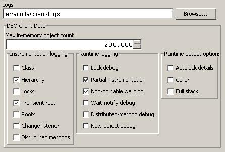

To specify optional DSO client configuration settings, double-click on the name of your configuration file in the Eclipse workspace view to display the Terracotta Configuration Editor. This editor is composed of a set of tabbed pages, all related to the configuration. For a detailed description of the pages that make up this editor refer to Configuring Your Terracotta Project. The remainder of this document describes the Server config page.

The Client config page displays (1) the log file location, (2) the in-memory cache size, and (3) debugging options.
Each Terracotta client writes messages of varying degrees of importance to its log file. For a detailed description of the client log file refer to Specifying the Client Logs.
A Terracotta client can operate in a limited memory environment wherein the size of the set of DSO objects that are kept in memory can be specified, and the rest are kept in The Terracotta Servers DSO L2 component. For a detailed description of the in-memory cache refer to Specifying the Client Cache Size.
A Terracotta client can emit various debugging message to its log. There are three categories of such debugging messages: (1) Instrumentation logging, (2) Runtime logging, and (3) Runtime output options. For a detailed description of the available debugging options refer to Client Debugging Options.